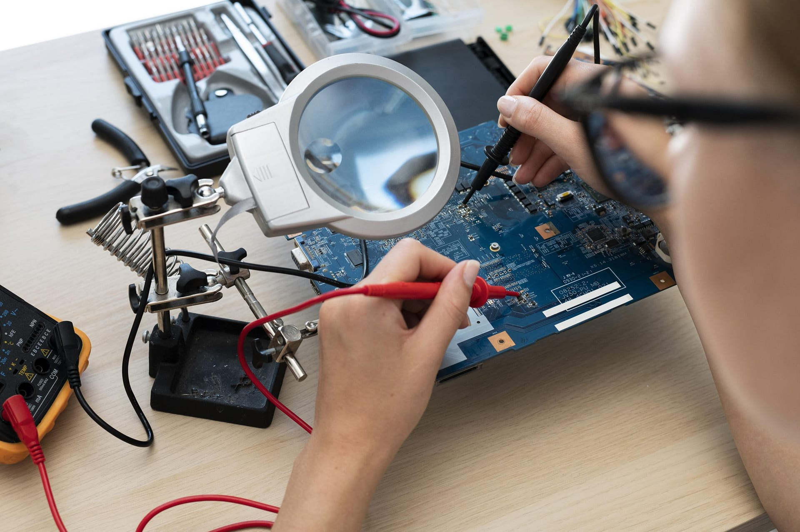

Infraestructura y soporte técnico para pagos electrónicos sin interrupciones.
Soporte técnico, reparación y venta de Puntos de Venta (POS), y mantenimiento de Cajeros Automáticos (ATM) para comercios y banca en Venezuela.
Trabajamos con las plataformas del sistema financiero nacional
Tres pilares para que tus cobros nunca se detengan.
Soporte a puntos de venta, venta de POS, reparación de cajeros automáticos (ATM) y suministros para comercios y entidades bancarias: desde la instalación hasta el último rollo de papel.
Experiencia, probidad y cuidado minucioso.
Un equipo técnico con más de 10 años de experiencia y stock de repuestos originales certificados por sus fabricantes.
Atención local directa
Sede física en el C.C. Global, Maracay. Trae tu equipo o te visitamos.
Técnicos certificados
Personal capacitado en hardware transaccional y en las plataformas de pago de la banca.
Respuesta rápida
Minimizamos el tiempo de inactividad de tus cobros con diagnóstico ágil y repuestos en stock.
Costos estables por convenio
Planes de mantenimiento con tarifas pactadas al firmar y ajustes semestrales.

Especialistas al frente de tu tranquilidad operativa.
Cuéntanos qué falla. Te respondemos por WhatsApp.
Tres preguntas y tu solicitud llega directo al técnico de guardia, con toda la información para atenderte sin rodeos.
- Sin registros ni contraseñas
- Toma menos de un minuto
- Atención a comercios, bancos y particulares
Soporte a puntos de venta, cajeros automáticos y venta de POS.
Lo que más nos preguntan comercios y bancos antes de llamarnos.
¿Dan soporte técnico a puntos de venta de cualquier banco?
Sí. Damos soporte técnico multimarca a puntos de venta (POS) asignados por los bancos del Sistema Financiero Nacional: diagnóstico, reparación, programación y mantenimiento preventivo de equipos PAX, Centerm, Feitian y otras marcas.
¿Venden puntos de venta (POS)?
Sí. Ofrecemos venta de equipos POS junto con su instalación, programación y soporte técnico posterior. Escríbenos por WhatsApp para conocer los modelos disponibles y sus precios.
¿Reparan cajeros automáticos (ATM)?
Sí. Hacemos instalación, mantenimiento correctivo y preventivo de cajeros automáticos (ATM), cambio de módulos como dispensador, lectora e impresora, y calibración, para bancos y operadores de cajeros.
¿Venden rollos de papel térmico y repuestos para POS?
Sí. Tenemos rollos de papel térmico, baterías, cargadores, teclados, pantallas y repuestos originales certificados por el fabricante, disponibles en nuestra sede de Maracay.
¿Dónde están ubicados y cuál es el horario?
Estamos en la Av. Bolívar, C.C. Global, PB, Pasillo D, Local 15, Maracay, estado Aragua. Atendemos de lunes a viernes de 8:00 am a 5:00 pm, y por WhatsApp en cualquier momento.